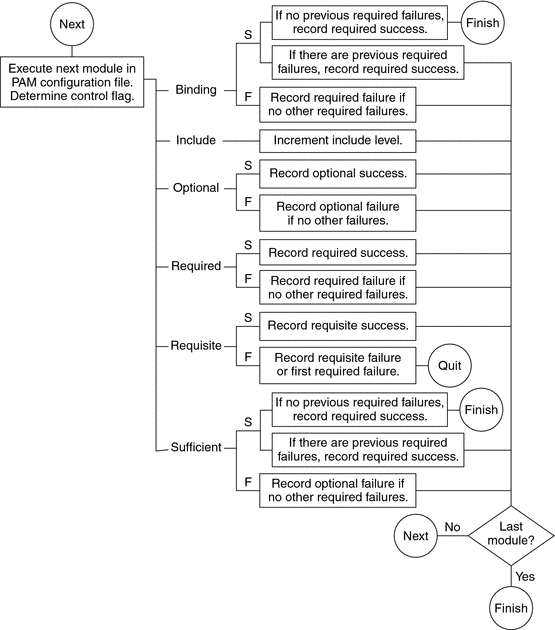
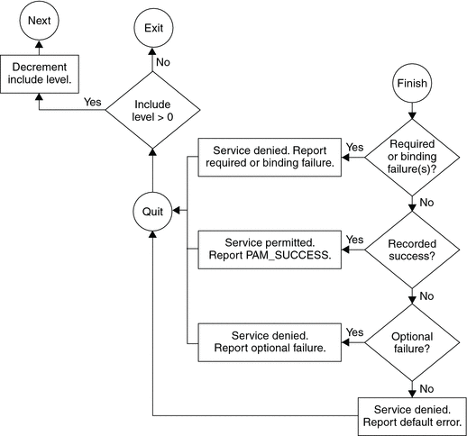

System Administration Guide: Security Services
|
|||
|
1. Security Services (Overview) Part II System, File, and Device Security 2. Managing Machine Security (Overview) 3. Controlling Access to Systems (Tasks) 4. Virus Scanning Service (Tasks) 5. Controlling Access to Devices (Tasks) 6. Using the Basic Audit Reporting Tool (Tasks) 7. Controlling Access to Files (Tasks) Part III Roles, Rights Profiles, and Privileges 8. Using Roles and Privileges (Overview) 9. Using Role-Based Access Control (Tasks) 10. Role-Based Access Control (Reference) Part IV Solaris Cryptographic Services 13. Solaris Cryptographic Framework (Overview) 14. Solaris Cryptographic Framework (Tasks) 15. Solaris Key Management Framework Part V Authentication Services and Secure Communication 16. Using Authentication Services (Tasks) 19. Using Solaris Secure Shell (Tasks) 20. Solaris Secure Shell (Reference) 21. Introduction to the Kerberos Service 22. Planning for the Kerberos Service 23. Configuring the Kerberos Service (Tasks) 24. Kerberos Error Messages and Troubleshooting 25. Administering Kerberos Principals and Policies (Tasks) 26. Using Kerberos Applications (Tasks) 27. The Kerberos Service (Reference) 28. Solaris Auditing (Overview) 29. Planning for Solaris Auditing 30. Managing Solaris Auditing (Tasks) |
PAM Configuration (Reference)The PAM configuration file, pam.conf(4), is used to configure PAM service modules for system services, such as login, rlogin, su, and cron. The system administrator manages this file. An incorrect order of entries in pam.conf can cause unforeseen side effects. For example, a badly configured pam.conf can lock out users so that single-user mode becomes necessary for repair. For a description of setting the order, see How PAM Stacking Works. PAM Configuration File SyntaxThe entries in the configuration file are in the format: service-name module-type control-flag module-path module-options
How PAM Stacking WorksWhen an application calls on the following functions, libpam reads the configuration file /etc/pam.conf to determine which modules participate in the operation for this service: If /etc/pam.conf contains only one module for an operation for this service such as authentication or account management, the result of that module determines the outcome of the operation. For example, the default authentication operation for the passwd application contains one module, pam_passwd_auth.so.1: passwd auth required pam_passwd_auth.so.1 If, on the other hand, there are multiple modules defined for the service's operation, those modules are said to be stacked and that a PAM stack exists for that service. For example, consider the case where pam.conf contains the following entries: login auth requisite pam_authtok_get.so.1 login auth required pam_dhkeys.so.1 login auth required pam_unix_cred.so.1 login auth required pam_unix_auth.so.1 login auth required pam_dial_auth.so.1 These entries represent a sample auth stack for the login service. To determine the outcome of this stack, the result codes of the individual modules require an integration process. In the integration process, the modules are executed in order as specified in /etc/pam.conf. Each success or failure code is integrated in the overall result depending on the module's control flag. The control flag can cause early termination of the stack. For example, a requisite module might fail, or a sufficient or binding module might succeed. After the stack has been processed, the individual results are combined into a single, overall result that is delivered to the application. The control flag indicates the role that a PAM module plays in determining access to the service. The control flags and their effects are:
The following two diagrams shows how access is determined in the integration process. The first diagram indicates how success or failure is recorded for each type of control flag. The second diagram shows how the integrated value is determined. Figure 17-2 PAM Stacking: Effect of Control FlagsFigure 17-3 PAM Stacking: How Integrated Value Is DeterminedPAM Stacking ExampleConsider the following example of an rlogin service that requests authentication. Example 17-1 Partial Contents of a Typical PAM Configuration FileThe pam.conf file in this example has the following contents for rlogin services: # Authentication management
...
# rlogin service
rlogin auth sufficient pam_rhosts_auth.so.1
rlogin auth requisite pam_authtok_get.so.1
rlogin auth required pam_dhkeys.so.1
rlogin auth required pam_unix_auth.so.1
...When the rlogin service requests authentication, libpam first executes the pam_rhosts_auth(5) module. The control flag is set to sufficient for the pam_rhosts_auth module. If the pam_rhosts_auth module is able to authenticate the user, then processing stops and success is returned to the application. If the pam_rhosts_auth module fails to authenticate the user, then the next PAM module, pam_authtok_get(5) is executed. The control flag for this module is set to requisite. If pam_authtok_get fails, then the authentication process ends and the failure is returned to rlogin. If pam_authtok_get succeeds, then the next two modules, pam_dhkeys(5) and pam_unix_auth(5), are executed. Both modules have the associated control flags that are set to required so that the process continues regardless of whether an individual failure is returned. After pam_unix_auth is executed, no modules for rlogin authentication remain. At this point, if either pam_dhkeys or pam_unix_auth has returned a failure, the user is denied access through rlogin. |
||
|